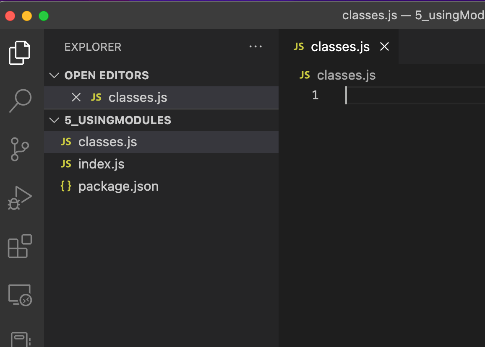

module.exports to export from a modulerequire() function to import from a moduleNode contains a variety of core modules, including modules for working with"
(path)(readline)(fs)(http)
Developers, companies, and organizations that use Node.js also create and publish modules that you can use in your
applications. These third-party modules are distributed and managed using npm, a popular package manager for Node.js.
Recent versions of Node.js actually contain two different module systems. The original module system known as CommonJS, and a newer module system known as ECMAScript Modules or simply ES Modules. Conceptually, CommonJS and ES Modules are similar, but their syntax and implementation details differ a bit.
ES Modules will eventually replace CommonJS, but the transition won't happen overnight. Due to the amount of legacy Node.js code that exists, you will see CommmonJS modules quite often in Node.
To add a local module to a Node application, simply add a new JavaScript file (.js) to your folder
class CatalogItem { constructor(title,series){ this.title = title; this.series = series } getInfo(){ if(this.series) { return `${this.title} (${this.series})` } else { return this.title; } } }
Below the above code we can use extends along with super to create a new class from a Parent Class
and add new items to the constructor,
like python,
class Book extends CatalogItem {
constructor(title,series,author){
super(title,series);
this.author = author;
}
}
We can also add function to a child class from a parent class
class Movie extends CatalogItem {
constructor(title,series,director){
super(title,series);
this.director = director;
}
getInfo() {
let result = super.getInfo()
if(this.director){
result += `[directed by ${this.director}]`
}
return result;
}
}
To use both the Parent Class CatalogItem and the child classes
Movie and Book we must export them from the class script using
module.exports and import them into index.js with the require() function
module.exports.Book = Book;
module.exports.Movie = Movie;
or
module.exports = {
Book,
Movie
};
Notice how we didn't export the parent class CatalogItem. We are
keeping it hidden in the class.js script, This is an example of abstraction
require()To import the two classes into index.js do the following
const classes = require("./classes");
const Movie = classes.Book;
const Book = classes.Movie;
Below are both scripts side by side with the results
classes.js
class CatalogItem {
constructor(title,series){
this.title = title;
this.series = series;
}
getInfo() {
if(this.series){
return `${this .title} (${this.series})`
} else {
return `${this.title}`
}
}
}
class Book extends CatalogItem {
constructor(title,series,author){
super(title,series);
this.author = author;
}
getInfo() {
let result = super.getInfo();
result += ` by ${this.author}`
return result
}
}
class Movie extends CatalogItem {
constructor(title,series,director){
super(title,series);
this.director = director;
}
getInfo() {
let result = super.getInfo();
if(this.director){
result += ` [ directed by ${this.director}]`
}
return result
}
}
module.exports = {
Book,
Movie
}
index.js
const classes = require("./classes")
const Book = classes.Book;
const Movie = classes.Movie;
const Rhetoric = new Book (
"Rhetoric",
null,
"Aristotle"
)
const aNewHope = new Movie (
"A New Hope",
"Star Wars",
"George Lucas"
)
console.log(Rhetoric.getInfo())
console.log(aNewHope.getInfo())
// prints
Rhetoric by Aristotle
A New Hope (Star Wars) [ directed by George Lucas]